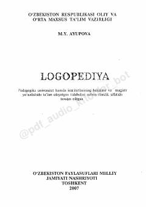

LLogopediya fanining nazariy va amaliy asoslari bo'yicha oliy o'quv yurtlari uchun darslik.
Ushbu darslik logopediyaning nazariy va metodologik asoslarini, nutq kamchiliklarining turlarini hamda ularni bartaraf etish usullarini qamrab oladi. Kitobda rivojlanishida nuqsoni bo'lgan bolalar bilan ishlash, nutq buzilishlarining oldini olish va logopedik yordamni tashkil etish masalalari ilmiy asoslangan holda yoritilgan.